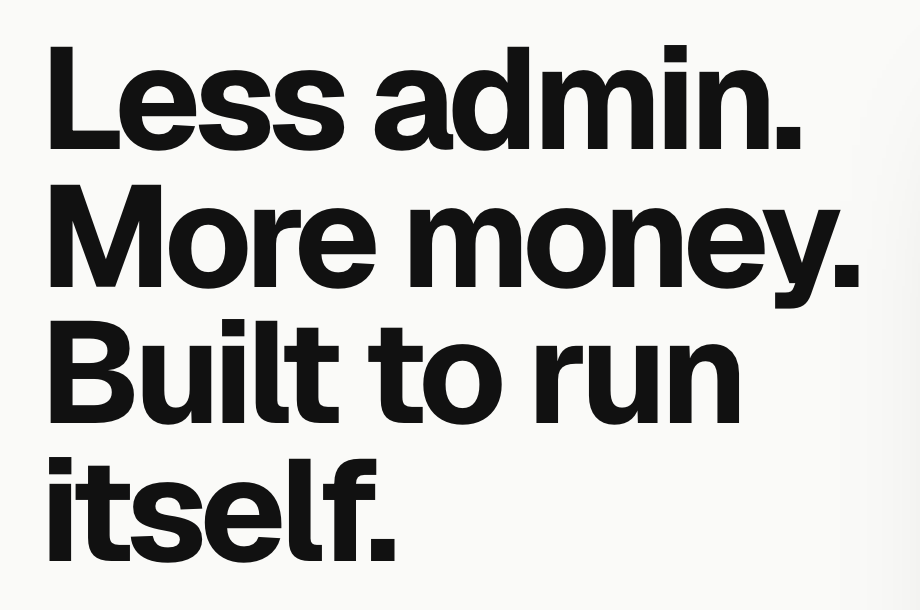

Hero detail 3: headline size and line spacing
Same words and weight (Geist bold, your pick), shown at a 1440 wide screen. Only the size and the space between lines change; phones scale down from the same setting. Headline at full size on the left, in place on the right.
Today72px, lines 0.95 apart, 4 lines. For comparison, not an option.


1. Smaller, more air60px with the lines a full line apart. The board becomes the biggest thing on the screen; the headline reads as a caption to it. 4 lines.
2. Same size, looser lines72px with a little more space between lines (1.05). Easier to read top to bottom, a softer block. 4 lines.
3. Same size, tighter lines72px with the lines pulled closer (0.88). The densest, loudest block. A bigger size is not on offer: 72px is the largest that keeps four lines beside the wider board, and 73px breaks a line. 4 lines.